피아노를 전공하면서도 연주회 포스터를 직접 제작할 만큼 디자인에 관심이 많았습니다.
이후 UX/UI 디자인을 접하며, 청중이 어떻게 느끼고 몰입할지를 항상 고민하는 연주와 사용자의 경험을 설계하는 디자인은 본질적으로 닮아 있다고 생각했습니다.
사용자의 행동과 감정을 고려해 더 나은 경험을 만들어가는 과정은 저에게 새로운 형태의 창작으로 다가왔고, 큰 흥미와 매력을 느껴 UX/UI 디자이너의 길을 선택하게 되었습니다.
FROM music TO
UX/UI
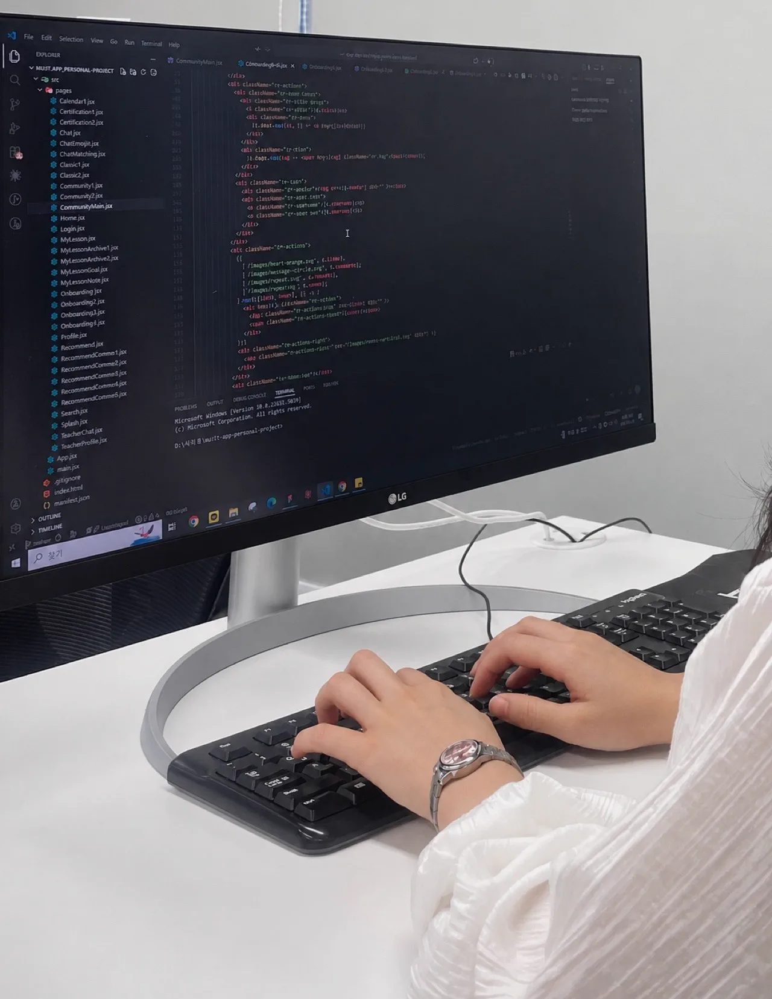
ALWAYS CREATING
MEANINGFUL
experiences
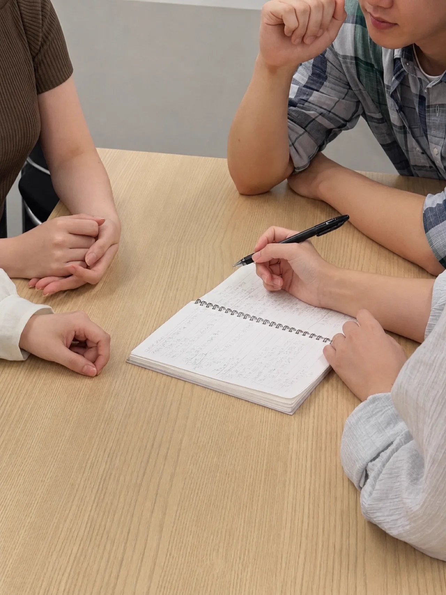
HARMONY
음악을 통해 조화와 균형의 가치를 배웠습니다. 다양한 요소를 하나의 경험으로 자연스럽게 연결하는 디자인을 지향합니다.
GROWTH
새로운 도전은 저에게 두려움보다 배움의 기회였습니다. 끊임없이 배우고 경험하며, 더 성장하는 내일을 만들어 가고 있습니다.
EMPATHY
사용자를 이해하는 태도를 가장 중요한 기준으로 생각합니다. 더 나은 경험을 위해 사용자의 관점에서 끊임없이 고민합니다.
피아노를 전공하며 항상 청중의 입장에서 고민하고 연주했던 경험은
사용자의 문제를 이해하고 경험을 설계하는 디자인이라는 새로운 무대로 이어지고 있습니다.
[머물고 싶은 이유]를 고민하는 디자이너 박지현
I believe every great experience gives people a reason to stay longer.
By understanding those reasons from the user's perspective,
I design experiences that people want to come back to.
좋은 경험에는 언제나 오래 머물고 싶은 이유가 있습니다.
사용자의 관점에서 그 이유를 고민하고, 다시 찾고 싶은 경험을 설계합니다.
WORK selected projects
WORK selected projects
TEAM PROJECT 1
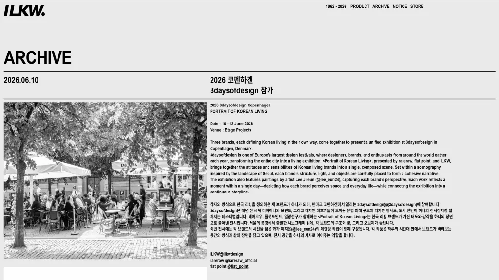
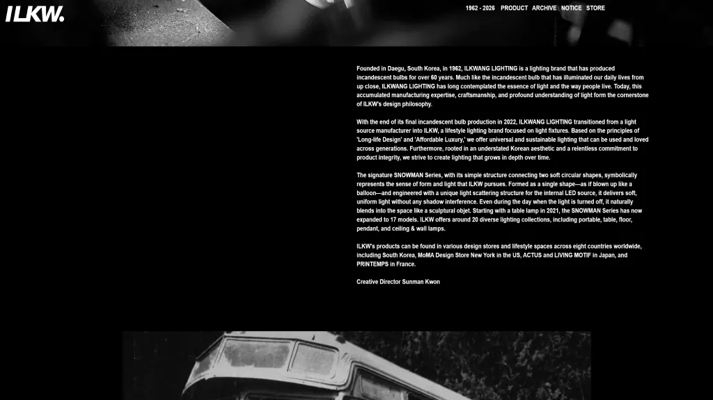
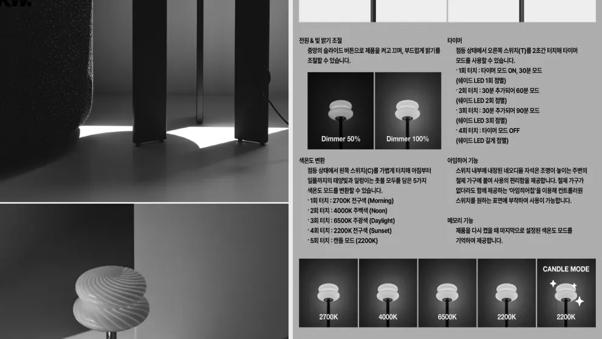
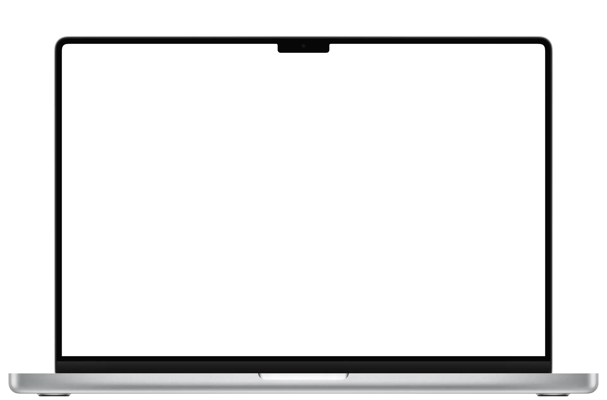
CRAFTING the BRAND experience
Restructured the user journey to transform product
information into an immersive brand experience
through content flow and interaction.
브랜드 스토리와 공간 경험이 충분히 전달되지 않는 기존 홈페이지의 문제점을 분석하고
일광전구라는 브랜드를 자연스럽게 경험할 수 있는 사용자 흐름으로 재구성했습니다.
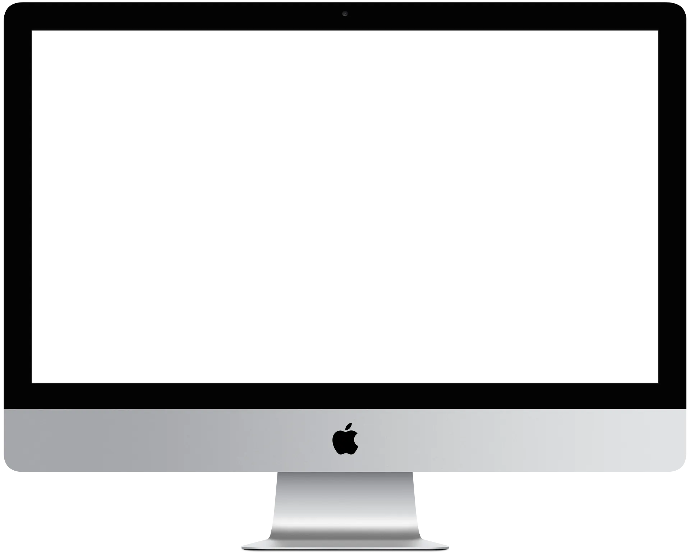
TYPOGRAPHY interaction
Through expressive typography and
interactive visuals,
we introduce Ilkwang Lighting's brand story,
highlighting its heritage and identity.
감각적인 타이포그래피와 인터랙티브한 비주얼을 통해 일광전구의 브랜드 스토리를 소개하고,
브랜드의 헤리티지와 정체성을 강조했습니다.
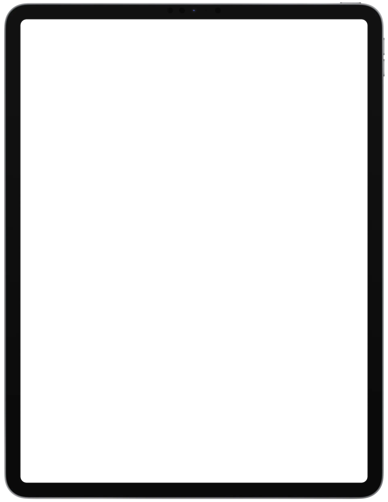
BEFORE & AFTER
Before-and-after interior comparisons
showcase the impact of ILKW Lighting,
helping users recognize the value and
presence of each product.
인테리어 비포 앤 애프터를 통해 일광전구 조명의 효과를 보여주고,
각 제품의 가치와 존재감을 자연스럽게 전달했습니다.

EDITORIAL design
Combined editorial layouts with roulette
interactions and hover animations to create an
engaging browsing experience.
일광전구와 협업한 컬렉션을 효과적으로 탐색할 수 있도록
룰렛 인터랙션, 마우스 호버 애니메이션, 에디토리얼 디자인을 적용했습니다.
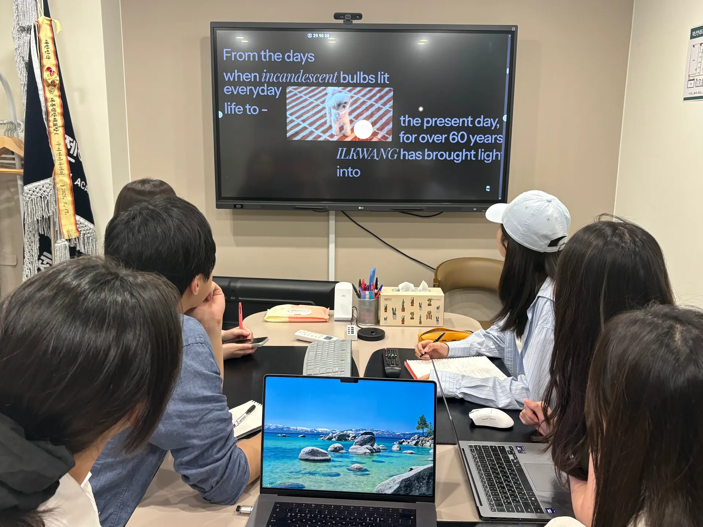
better TOGETHER
Through collaboration, I learned that great design is
built on communication and shared ideas.
Together, we refined every detail to achieve the
best possible outcome.
아이템 선정부터 UX 기획, IA 설계, UI 디자인, 기획서 디자인까지 팀원들과 적극적으로 소통하며 프로젝트를 진행했습니다.
다양한 의견을 조율하고 함께 발전시키는 과정의 가치를 경험했으며,
이를 통해 실무에서도 원활하게 소통하고 협업할 수 있는 역량을 길렀습니다.
TEAM PROJECT 2
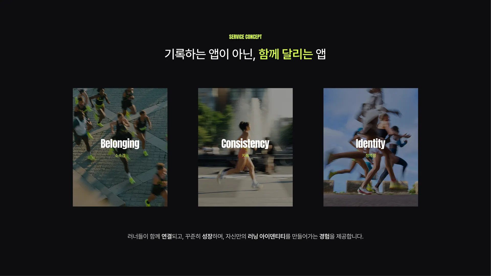
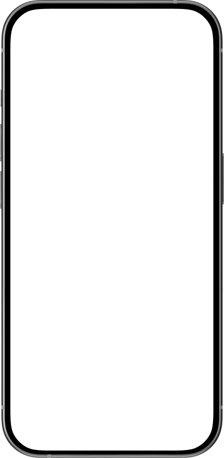
RETENTION-FOCUSED experience
Analyzed the limitations of record-centered running apps
and designed a retention-focused service structure
and user flow to encourage continuous engagement.
기록 중심 구조인 기존 러닝 앱의 한계를 분석하고
사용자의 지속적인 참여를 위한 리텐션 중심의 서비스 구조와 사용자 흐름을 설계했습니다.
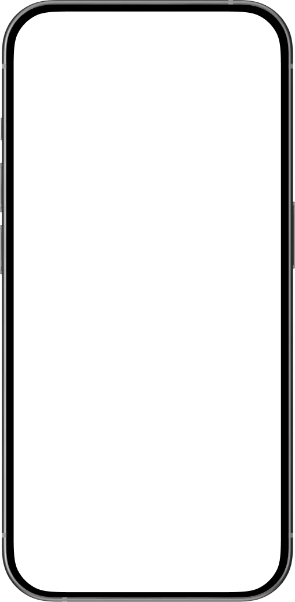
COMMUNITY & CREW
Designed a community experience that
helps runners connect, interact, and stay
motivated through shared goals.
러너들이 함께 소통하고 목표를 공유하며
지속적으로 동기부여를 받을 수 있는 커뮤니티 경험을 설계했습니다.
SHARE your RUN
Turned running records into
shareable cards, encouraging
users to celebrate achievements
and inspire one another.
러닝 기록을 공유 가능한 카드 형태로 제작하여
성취감을 느끼고 서로에게 동기부여를 줄 수 있도록 설계했습니다.
PERSONAL PROJECT
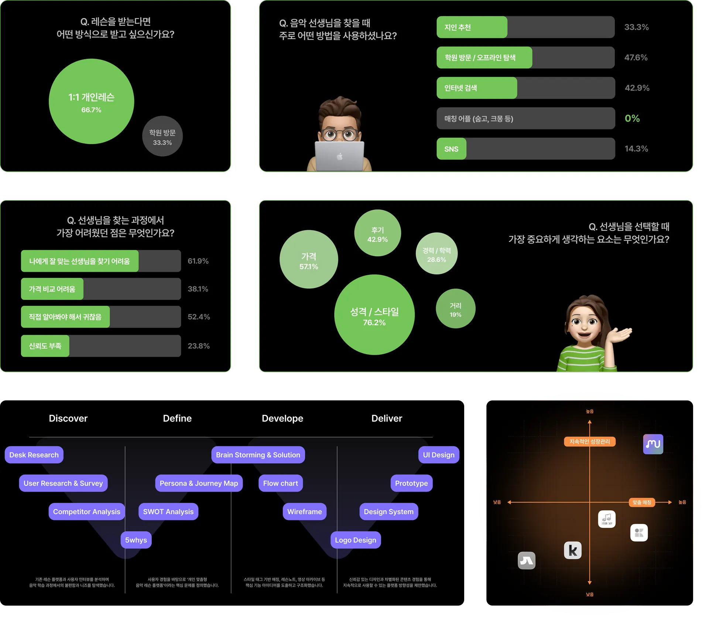
USER RESEARCH process
Conducted user research through
surveys, competitor analysis, and the
Double Diamond process to define core
problems and shape the UX strategy.
설문조사와 경쟁사 분석, 포지셔닝 맵, 더블 다이아몬드 프로세스를 통해
사용자 니즈를 분석하고 핵심 문제를 정의하여 UX 전략을 수립했습니다.
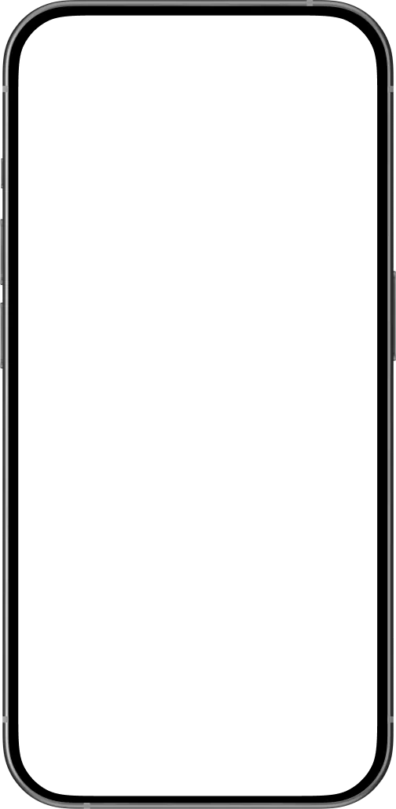
friendly ONBOARDING
To create a more welcoming and engaging first
experience, I created AI-generated characters and
incorporated them into the onboarding experience.
사용자가 서비스를 더욱 친근하게 경험할 수 있도록 생성형 AI를 활용하여
서비스 콘셉트에 맞는 캐릭터를 직접 제작하고 온보딩 화면에 적용했습니다.
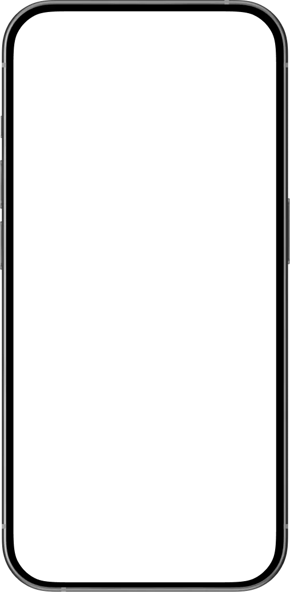
PERSONALIZED matching
Delivered personalized teacher
recommendations based on each learner's
instrument, skill level, goals, and preferred lesson style.
기존의 선생님 탐색의 한계를 개선하기 위해 사용자의 악기, 실력, 학습 목적을
반영한 맞춤형 선생님 추천 기능을 설계하여 탐색 부담을 줄이고 매칭 효율을 높였습니다.
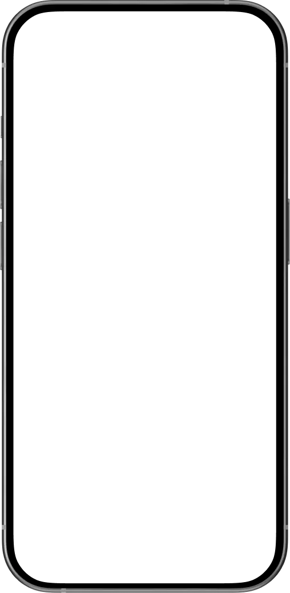
beyond MATCHING
Expanded the experience beyond teacher
matching with lesson management, practice
tracking, and personalized music recommendations.
기존 선생님 매칭 서비스의 일회성 이용 구조를 개선하기 위해
매칭 이후에도 레슨 관리와 연습 관리, 그리고 클래식 추천 기능을 설계하여 지속적인 학습 경험을 제공했습니다.
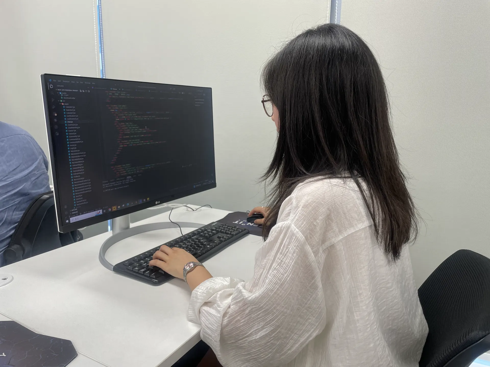
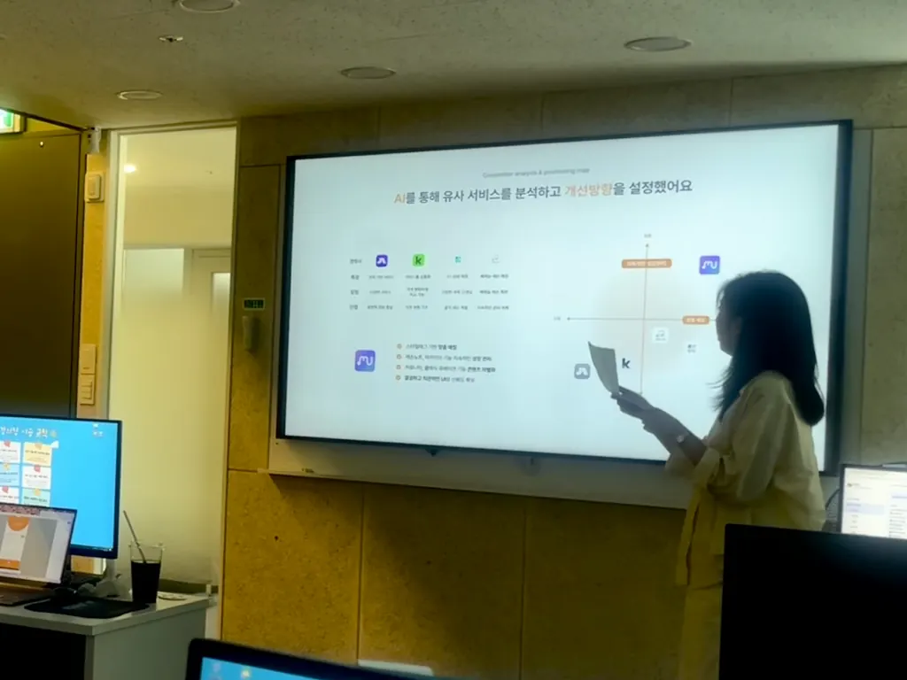
from IDEA to DEPLOYMENT
Handled the entire process independently,
from planning to deployment, strengthening
my UX/UI fundamentals and learning vibe coding.
기획부터 구현, 배포까지 전 과정을 혼자 수행하며 서비스 제작 전반에 대한 이해를 넓혔습니다.
또한 UX/UI 디자인의 기초를 탄탄히 다지고, 바이브 코딩을 활용해 아이디어를 실제 서비스로 구현하는 경험을 쌓았습니다.
AI LAB font pairing poster studio
사용자가 다양한 폰트 조합과 디자인 시안을 쉽고 빠르게 탐색할 수 있도록
AI를 활용한 폰트 페어링 및 포스터 생성 기능을 기획했습니다.
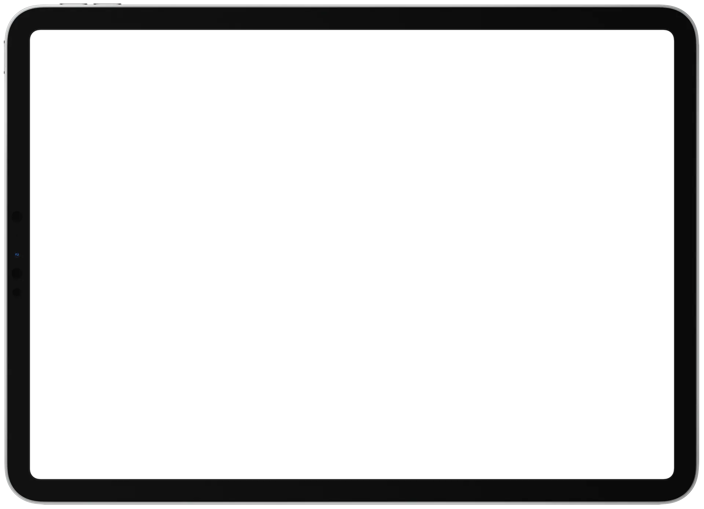
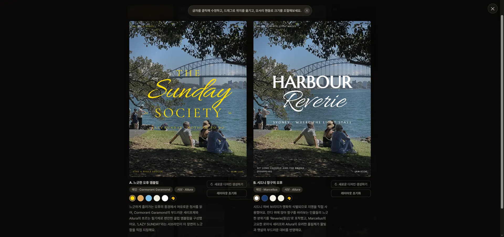
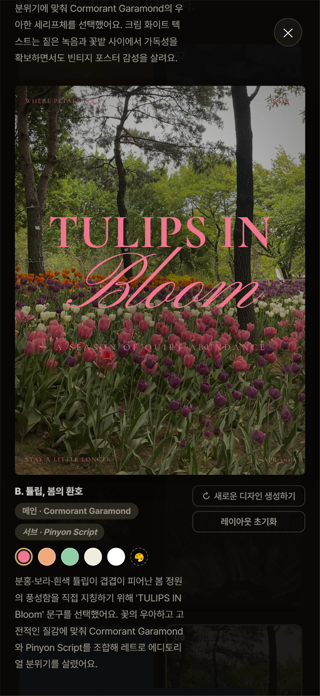
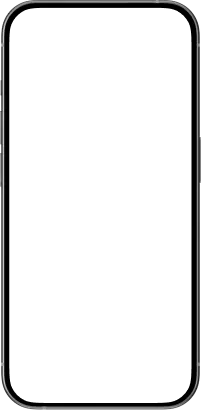
clone CODING
클론 코딩을 통해 실제 서비스를 분석하고 직접 구현하며
화면 구조와 인터랙션에 대한 이해를 넓혔습니다.
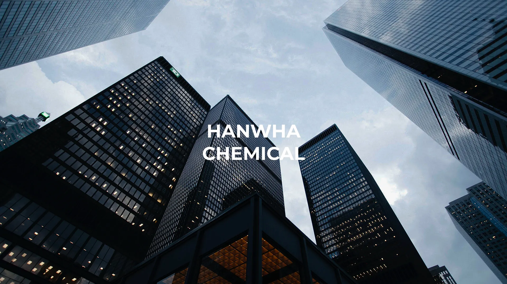
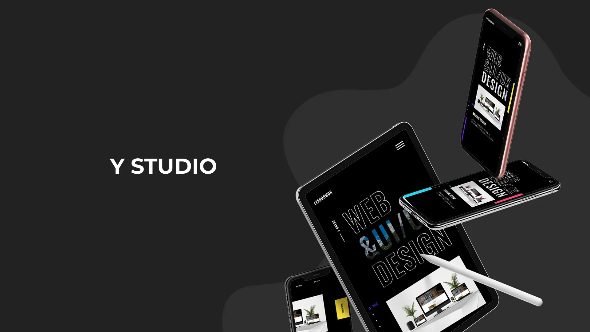
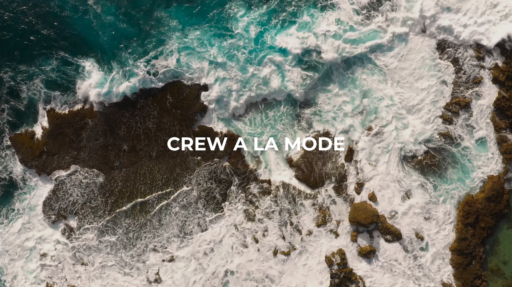
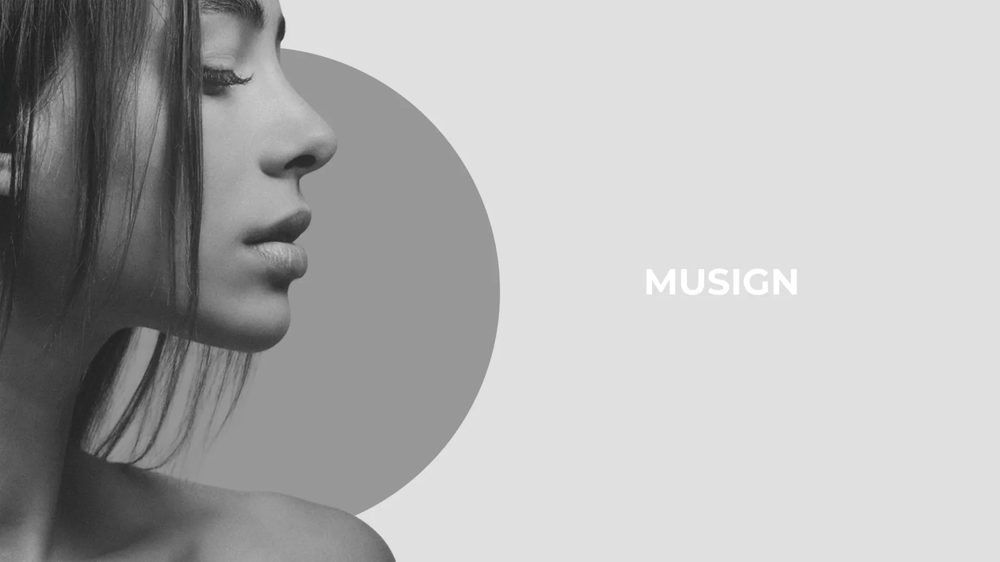
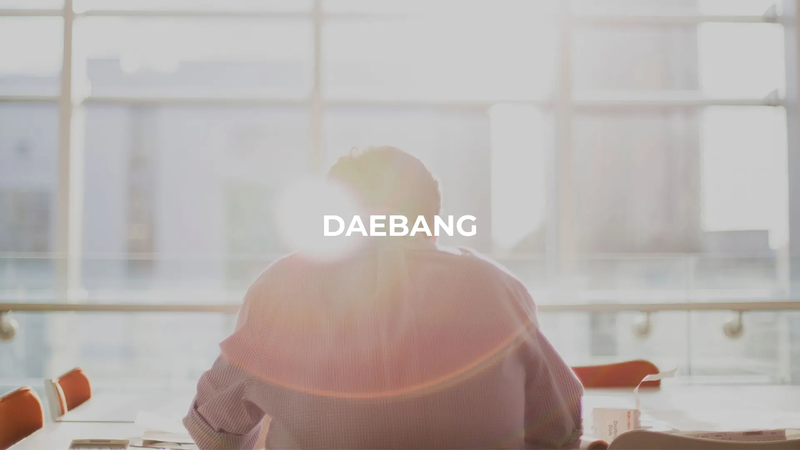
SKILL tools & skills
SKILL tools & skills
SKILL
다양한 디자인 툴과 AI 도구를 활용하여
효율적인 프로세스와 완성도 높은 결과물을 만들어갑니다.
DESIGN
FRONTEND
AI
ABOUT more about me
ABOUT more about me
WHAT shapes ME
일상의 경험으로PHOTOGRAPHY
사진의 프레임 안에서 구도와 색감을 익히며,
일상의 따뜻한 순간과 감정을 바라보는 시선도 함께 넓혀왔습니다.
디자인을 대하는 태도와 중요하게 생각하는 가치를 담은
짧은 질의응답으로 프로젝트 너머의 디자이너 박지현을 소개합니다.
피아노를 전공하면서도 연주회 포스터를 직접 제작할 만큼 디자인에 관심이 많았습니다.
이후 UX/UI 디자인을 접하며, 청중이 어떻게 느끼고 몰입할지를 항상 고민하는 연주와 사용자의 경험을 설계하는 디자인은 본질적으로 닮아 있다고 생각했습니다.
사용자의 행동과 감정을 고려해 더 나은 경험을 만들어가는 과정은 저에게 새로운 형태의 창작으로 다가왔고, 큰 흥미와 매력을 느껴 UX/UI 디자이너의 길을 선택하게 되었습니다.
피아노를 전공하며 오랜 시간 쌓아온 집요함과 책임감이 가장 큰 강점이라고 생각합니다.
항상 150%를 준비해야 하는 무대를 수없이 경험하며, 더욱 치밀하게 완성하기 위해 작은 부분까지 반복해서 연습했던 경험은 디자인에서도 그대로 이어졌습니다.
문제를 끝까지 해결하려는 끈기와 디테일을 놓치지 않는 태도, 그리고 지속적으로 배우고 겸손하게 성장하려는 자세가 저만의 경쟁력이라고 생각합니다.
디자인도 잘 읽히는 글처럼 한눈에 이해되는 명확함과 직관성이 중요하다고 생각합니다.
사용자가 어디를 눌러야 하는지, 어떤 정보가 중요한지 고민하지 않아도 자연스럽게 파악할 수 있어야 합니다.
시각적 위계와 정보 구조를 명확하게 구성하여, 사용자가 쉽고 편안하게 서비스를 이용할 수 있는 경험을 만드는 디자이너가 되고 싶습니다.
결과물에 앞서 항상 '왜?'를 고민하는 디자이너가 되고 싶습니다.
사용자가 왜 이런 행동을 하는지, 왜 이 문제가 발생했는지, 왜 이 기능이 필요한지를 끊임없이 질문하며 문제의 본질을 이해하려고 합니다.
단순히 보기 좋은 화면을 만드는 것이 아니라, 명확한 근거와 의도를 바탕으로 더 나은 사용자 경험을 설계하는 디자이너로 성장하고 싶습니다.
I'm ready to create meaningful experiences,
collaborate with great people, and keep
learning through every project.
의미 있는 경험을 만들고, 함께 협업하며,
새로운 프로젝트마다 배우고 성장하는 디자이너가 되고자 합니다.

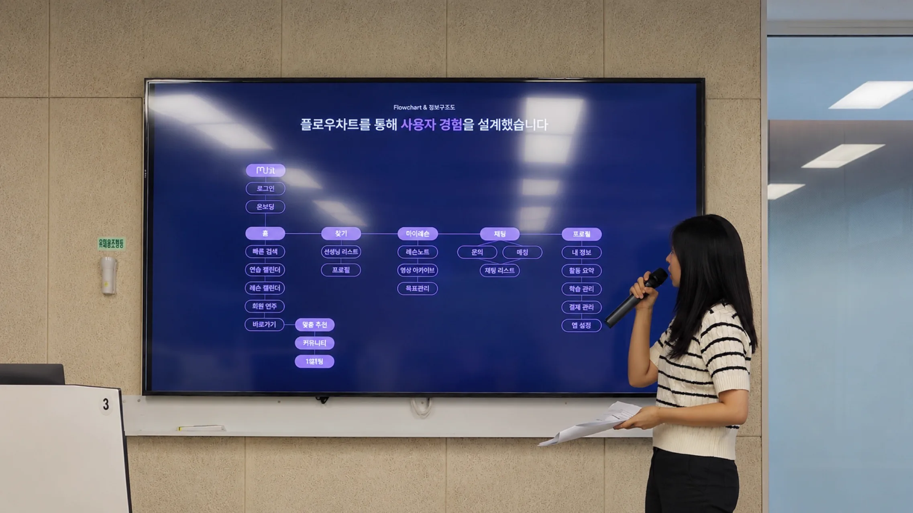